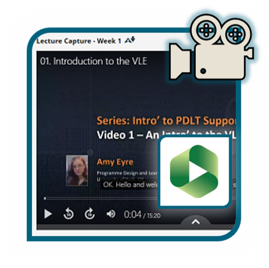
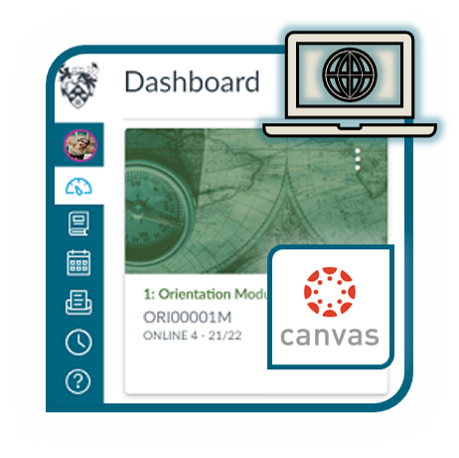
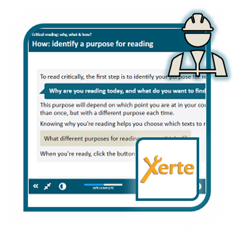
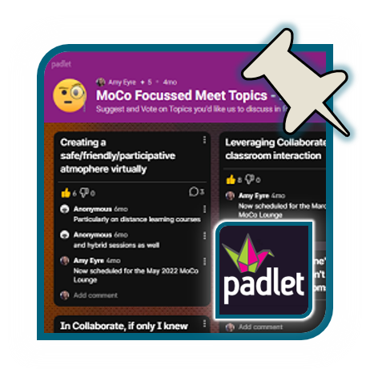
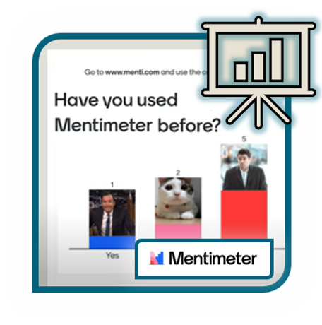

Staff support for the online learning tools managed by the Programme Design & Learning Technology Team.
Jump to the tool you want using the navigation menu above or links below, or search to find a specific guide.
For student support, visit our Practical Guide to Learning Technology.
The VLE used for almost all on-campus programmes.
Video tool for the Replay lecture capture systems and sharing at-desk recordings.

Tool to present module readings in a central and accessible location within VLE sites.
The VLE used for York Online programmes.

A tool for creating interactive online content.

A flexible web-based tool for collaborative and individual project work and discussion.

A tool for adding polling and other interaction to presentations or sessions.
